Lunch rush
Hot, fast, fresh pizza that keeps up with your busy day.
Calgary-born Neapolitan-style pizza truck
Premium Neapolitan-style pizza, flame-baked fresh and served from our mobile truck across Calgary.

Wherever we park, fresh flame-baked pizza brings people together.
Hot, fast, fresh pizza that keeps up with your busy day.
Familiar pizza favourites, made fresher and easier to share.
A crowd-friendly food experience for markets, festivals, schools, hospitals, parks, and breweries.
Make your next gathering more memorable with pizza baked fresh on site.
Quality you can taste
It needs the right dough, the right ingredients, and the right moment in the oven. We start with soft, airy Caputo 00 dough, sweet San Marzano DOP tomatoes, creamy fior di latte, and fresh basil. Simple ingredients, chosen carefully, layered with balance, and baked to bring out their best flavour. When the pizza hits the flame, the crust rises, the cheese bubbles, and the edges take on a gentle char. What comes out is warm, fragrant, and full of character.
This is Slice Story pizza: feels lighter, fresher, flavourful, and more carefully made than typical fast-food pizza.